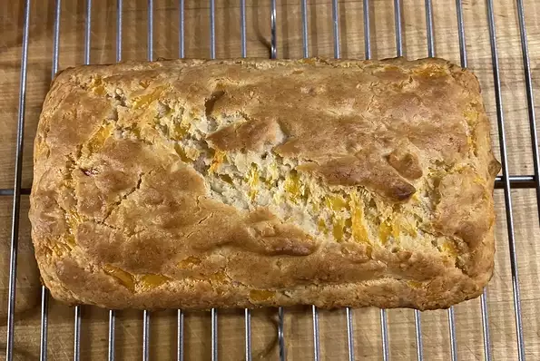

Quick and Easy Cheese Bread

Description
This easy bread is excellent with anything from meatloaf, to soups, to chicken. Tates wonderful, but is pretty crumbly.
Ingredients
- 1 3/4 cups all-purpose flour
- 1/4 cup white sugar
- 2 1/2 teaspoons baking powder
- 3/4 teaspoon salt
- 1 cup shredded Cheddar cheese
- 1 egg, beaten
- 3/4 cup milk
- 1/3 cup vegetable oil
Ingredients
- Preheat oven to 400 degrees F. Lightly grease a 9x5 in loaf pan.
- In a large bowl, mix together flour, sugar, baking powder, salt and cheese. In another large bowl, beat together egg, milk, and oil.
- Stir the flour/cheese mixture into the egg mixture. Pour batter into prepared pan.
- Bake in preheated oven for 35 minutes, until a toothpick inserted into the center of loaf comes out clean.
Credit
allrecipes
Links
Homepage